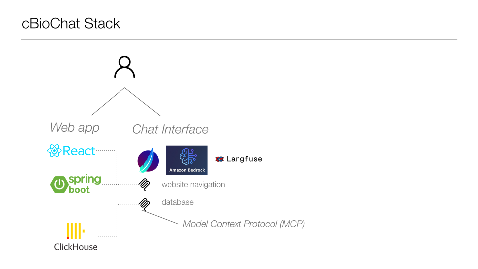
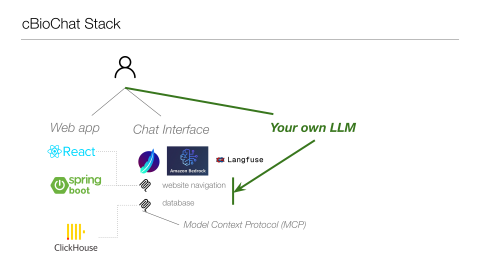
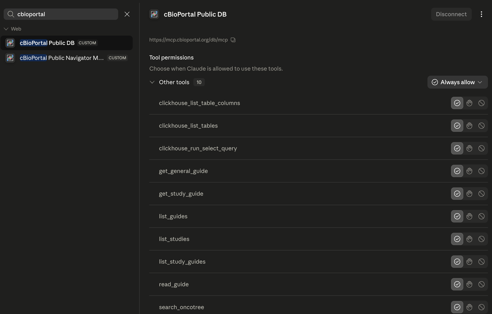
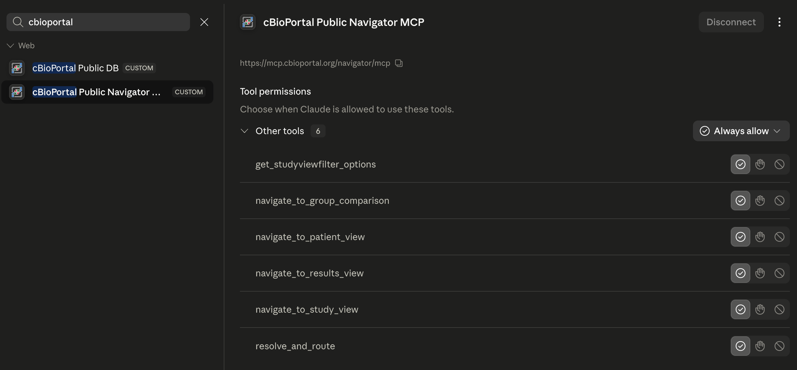
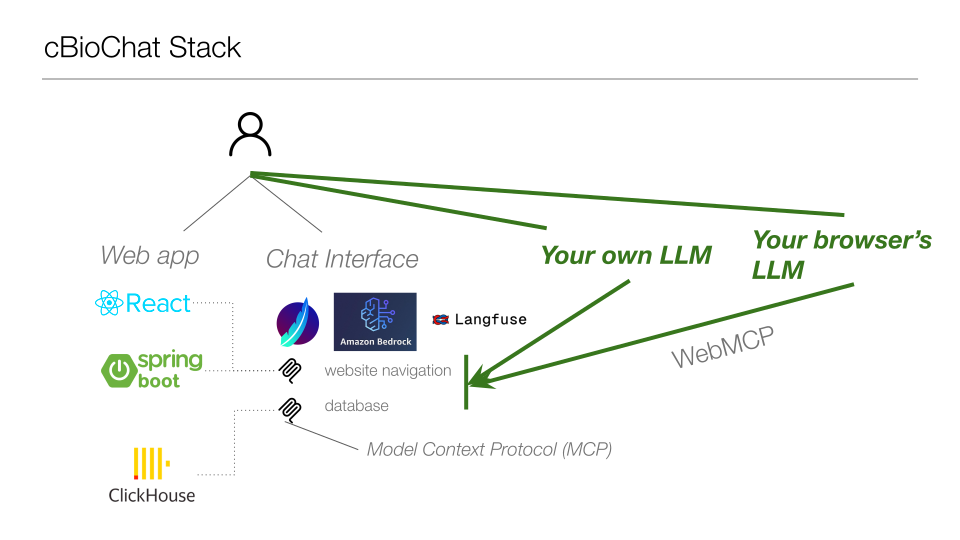
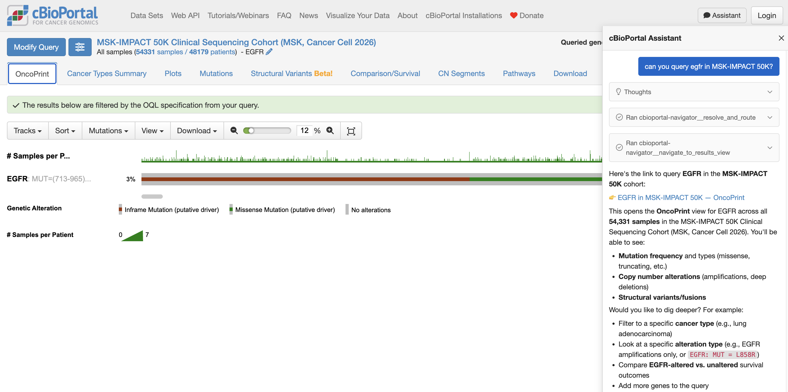

cBioPortal Community Call · June 23, 2026
AI Prototypes
& Future Concepts
cBioPortal Development Team
Overview
What we'll demo today
🔌 Integration in Agentic Workflows
MCP servers — Navigator + DB query tools for AI agents.
💬 Integration in the Website
Prototype: AI assistant embedded in the main cBioPortal UI.



https://mcp.cbioportal.org/db/mcp EXPERIMENTAL

https://mcp.cbioportal.org/navigator/mcp EXPERIMENTAL
Demo 1
Integration in Agentic Workflows
MCP Servers · Navigator · DB Queries
live demo →Context
LLMs in the browser
Several companies now ship browsers with built-in LLMs:
- Google — Gemini
- OpenAI — Atlas
- Perplexity — Comet
- Anthropic — Claude Chrome Extension
If the browser has an LLM, can it navigate cBioPortal for you?
Letting the browser's LLM navigate cBioPortal

Demo 2 · Zain Nasir
Integration in the Website
AI assistant embedded in cBioPortal

live demo →Discussion & Feedback
- MCP access — would your team use agent-based access to cBioPortal data?
- UI integration — what would you ask an AI assistant in cBioPortal?
- What's next? — what AI features would be most valuable for your workflow?